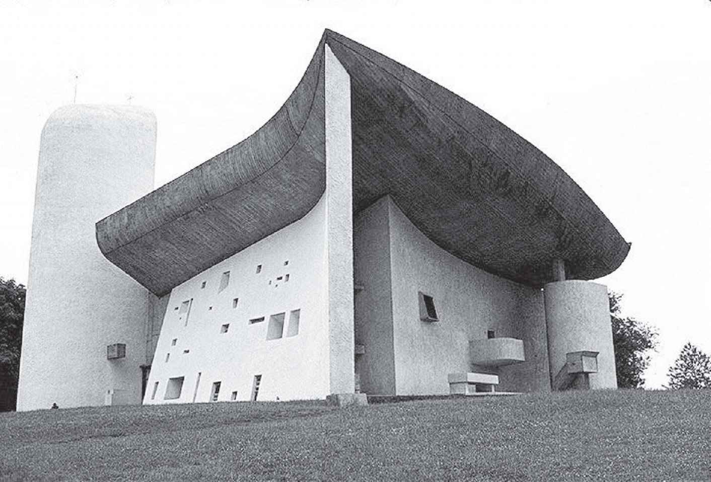
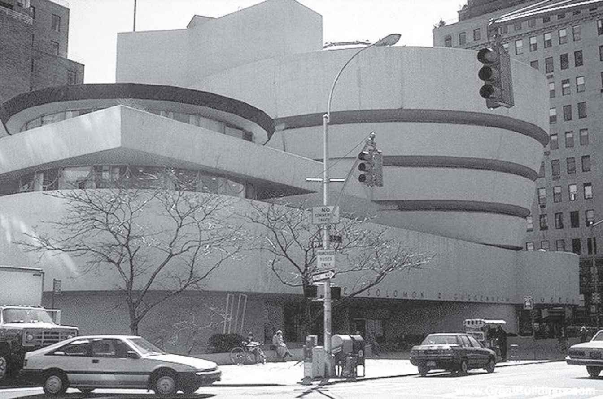
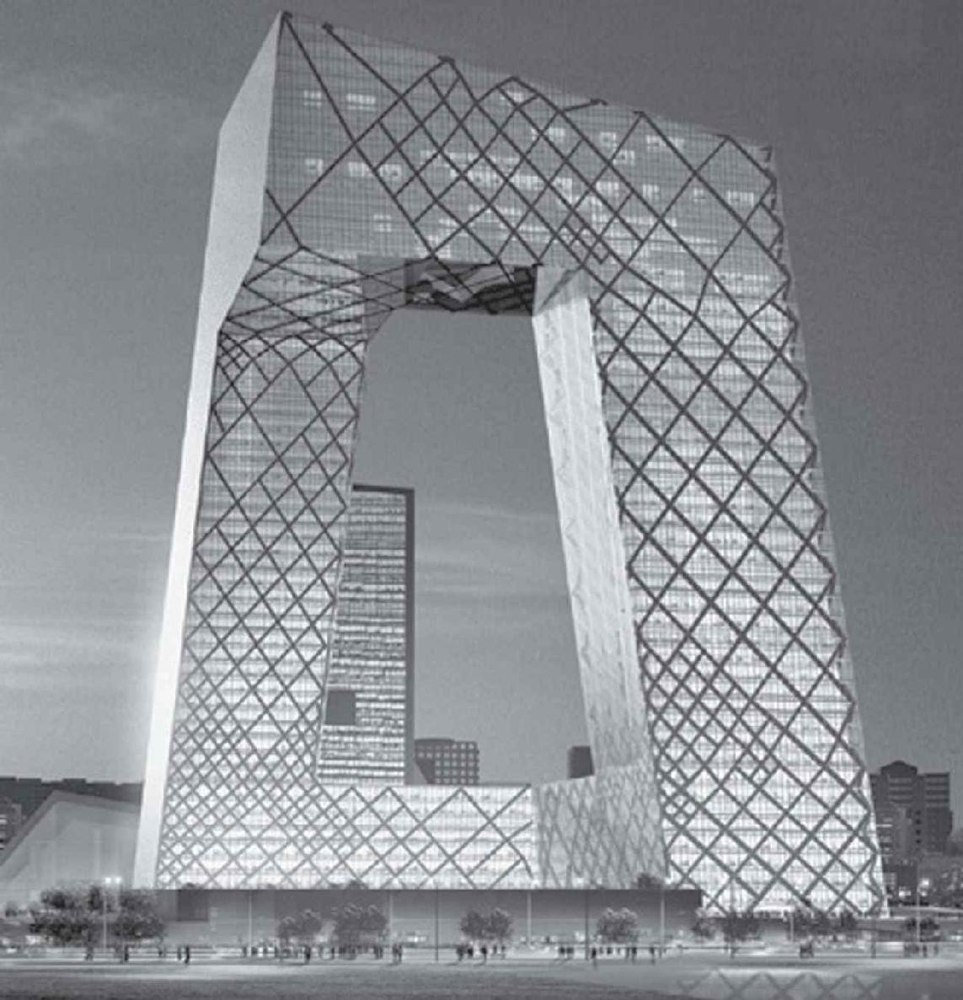
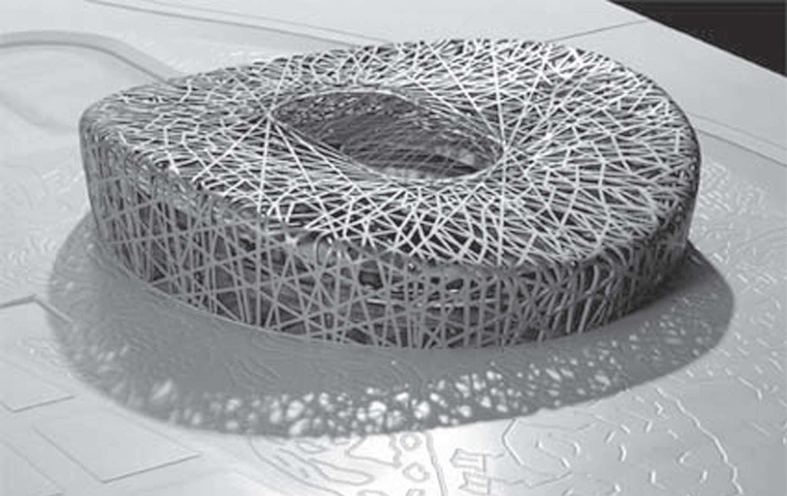

随着社会分工的进一步细化，人们所受教育的时间不断延长，所学内容也越来越复杂和抽象，这在人类文明的各个领域皆如此。正如凭借王之涣（688—742）《登鹳雀楼》这类简单明晰的诗歌留名史册已不可能，像费尔马小定理那样既容易推导又能传世的数学成果也很难再出现。与此同时，无论在数学、自然科学还是艺术、人文领域，人们的审美观念均发生了很大的变化，复杂、抽象和深刻已成为评判的标准和尺度之一。
可喜的是，抽象化并没有导致纯粹数学理论被束之高阁，反而得到了更广泛的应用。这一点恰好说明，数学的抽象化是符合社会潮流的发展和变化的。自从微积分诞生以来，数学作为一种强有力的工具，在17、18世纪推动了以机械运动为主体的科学技术革命，在1860年以后又推动了以发电机、电动机和电气通信为主体的技术革命。19世纪40年代以来，无论是电子计算机、原子能技术、空间技术、生产自动化还是通信技术，都与数学紧密相关，相对论、量子力学、超弦理论、分子生物学、数理经济学和混沌理论等科学分支所需要的数学工具尤为深奥和抽象。

勒·柯布西耶作品：法国朗香教堂（1953）

赖特作品：纽约古根海姆博物馆
随着科学技术的进步和现实社会的发展，不断催生出新的数学理论和分支，我们仅以突变理论和小波分析为例。突变理论诞生于1972年，当年法国拓扑学家、菲尔兹奖得主托姆（R.Thom，1923—2002）出版了《结构稳定性与形态发生学》一书。突变理论研究的是系统控制变量经受突然的巨大变化的一系列行为及其分类，它是微分流形拓扑学的一个分支，系统变量最终的性质、行为可绘制成曲线或曲面。以拱桥为例，最初只是比较均匀地变形，直到荷载达到某一临界点时，桥形瞬间发生变化而坍塌。后来，突变理论的思想被社会学家应用于诸如群氓斗殴等社会现象的研究。
再来看小波分析，它被誉为“数学的显微镜”，是调和分析领域的里程碑式进展。大约在1975年，从事石油信号处理工作的法国工程师莫利特（J.Morlet，1931—2007）提出并命名了“小波”。小波分析或变换是指用有限长的、快速衰减的振荡波形表示信号，与傅里叶变换一样，可用正弦函数之和表示。二者的区别在于：小波在时域和频域上都是局部的，而傅里叶变换通常只在频域上是局部的；另外，小波计算的复杂度较小，只需O（N）时间，而快速傅里叶变换需要的时间是O（NlogN）。除了信号分析，小波分析还被用于武器智能化、电脑分类识别、音乐语言合成、机械故障诊断、地震勘探数据处理，等等。在医学成像方面，小波缩短了B超（超声波检查的一种）、CT和核磁共振成像的时间，提高了时空分辨率。
20世纪数学的主流可以说是结构数学，这是法国布尔巴基学派的一大发明。数学的研究对象不再是传统意义上的数与形，数学的分类不再是代数、几何和分析，而是依据结构相同与否。例如，线性代数和初等几何“同构”，故而可以一起处理。布尔巴基学派的主将韦伊（A.Weil，1906—1998）与文化人类学家列维—斯特劳斯（Levi-Strauss，1908—2009）有交往，后者用结构分析的方法研究不同文化的神话，发现其中的“同构性”，可以说这是语言学和数学相结合的产物。列维—斯特劳斯引领的哲学潮流——结构主义在20世纪60年代的法国盛极一时，拉康（J.Lacan，1901—1981）、巴尔特（R.Barthes，1915—1980）、阿尔杜塞（L.Althusser，1918—1990）和福柯（M.Foucault，1926—1984）分别将之应用于精神分析学、文学、马克思主义和社会历史学研究，而德里达（J.Derrida，1930—2004）的解构主义则是对结构主义的批判。
展望未来，数学能否走向统一？这是人们关心的问题。早在1872年，德国数学家F.克莱因就发表了著名的《埃尔朗根纲领》，基于他与挪威数学家、李群和李代数的发明人索菲斯·李在群论方面的工作，试图用群的观点统一几何学和数学。按照布尔巴基学派的观点，李群是群结构和拓扑结构的结合。随后群的观点便深入到数学的各个部分中去，可F.克莱因的目标仍遥不可及。将近一个世纪以后，加拿大数学家朗兰兹（R.P.Langlands，1936—）又举起了“朗兰兹纲领”的大旗。1967年，他在给韦伊的信中，提出了一系列猜想，揭示了数论中的伽罗华理论与分析中的自守型理论之间的关系。
19世纪后期以来，数学的某些不同学科之间有相互渗透、结合的趋势，这推动了一系列新的数学分支的诞生。即便在当前，数学的分化依然是主流，最鲜明的特征是抽象化、专业化和一般化。相当一部分数学存在脱离现实世界和自然科学的倾向，这是十分令人担忧的现象。那么，抽象化或结构最终能否成为数学统一的标签呢？这种可能性无疑是存在的，可是无论如何，数学的统一无法在不断孤立自身的背景下实现。

库哈斯和舍人作品：中央电视台大楼

赫尔佐格和德梅隆作品：“鸟巢”体育场
与此同时，“拼贴”逐渐成为艺术的主要技巧和代名词，拼贴也是哲学家努力找寻的现代神话。从前，我们理解的拼贴是把不相关的画面、词语、声音等随意组合起来，以创造出特殊效果的艺术手段。现在看来，这个范围还可以扩大，至少可以涵盖观念的组合。这样一来，拼贴就会在数学甚至更多文明中发挥作用。可以说，数学中许多新的交叉学科就是拼贴艺术在这些领域发挥作用的结果。拼贴和抽象化在某种意义上是同一件事，只不过拼贴这个词来源于艺术，而抽象化则更多地让人联想到数学。
限于篇幅，我们没有讨论绘画以外的其他艺术形式，它们同样经历了抽象化的过程。比如建筑，从内容、形式到装饰都发生了重大变化。古罗马建筑师维特鲁威在《建筑十书》里提出了“适用、坚固、美观”三个词，成为判断建筑物或建筑方案优劣的准则。即使文艺复兴时期的阿尔贝蒂，也只是把“美观”分为“美”和“装饰”，他认为美在于和谐的比例，而装饰只是“辅助的华彩”。20世纪以来，建筑师们终于意识到，装饰不再是无足轻重的华彩，而是不可或缺的无处不在的艺术组成部分（就像绘画中的拼贴那样）。其中，几何图形（无论是古典的还是现代的）扮演了非常重要的角色。
与音乐、绘画、建筑等艺术一样，数学是无国界的，几乎没有语言障碍。它不仅是人类文明的重要组成部分，也可能是外星文明的重要组成部分。如果真的存在外星人，他们可能读得懂甚或精通数学。也就是说，地球人与外星人可望基于数学形式的语言进行沟通。早在1820年，数学家高斯就曾建议用毕达哥拉斯定理的图形化示范方法显示广袤的西伯利亚森林，作为发往太空的人类文明信号。大约20年后，波西米亚出生的奥地利天文学家约瑟夫·冯·利特罗（Joseph von Littrow，1781—1840）提出用充满石油的沟壑纵横的撒哈拉沙漠的图像作为文明信号。
他们都认为，这类数学图片信号必定会引起富有智慧的外星生命的关注。遗憾的是，这两个想法均未能付诸实践。美国亚利桑那大学数学教授卡尔·德维托（Carl Devito）认为，两个星球开展精确的交流取决于科学的信息交流，为此两者必须首先学习对方的测量单位。近年来，他和一位语言学家合作，提出了一种基于普遍科学概念的语言。他们认为，大气中化学成分或者星球能量输出的差异，可能能使不同星系的文明彼此交流。这一想法基于以下假设：两个星球都会一些数学方法和计算，都认可化学元素和周期表，都对物质状态进行了定量研究，都知道应用足够的化学物质进行计算。
尽管如此，要成功联系到外星文明依然存在许多困难和障碍。例如，外星人可能从不同的数学方法出发总结出运动的定律，这些定律可能与我们熟悉的定律大不相同。我们描述运动的数学基础是微积分，微积分是许多科学领域的基础，外星文明是否也这样呢？又如，外星人是否已建立起欧几里得几何或非欧几何学？外星人的物理学可能与我们的物理学存在差异，他们是否承认哥白尼提出的太阳系宇宙学说？这也值得怀疑。同样棘手的问题是，如何从数学出发讨论人类文明的其他方面？这正是本书试图探讨的一个问题，需要我们做大量跨文化的研究工作。